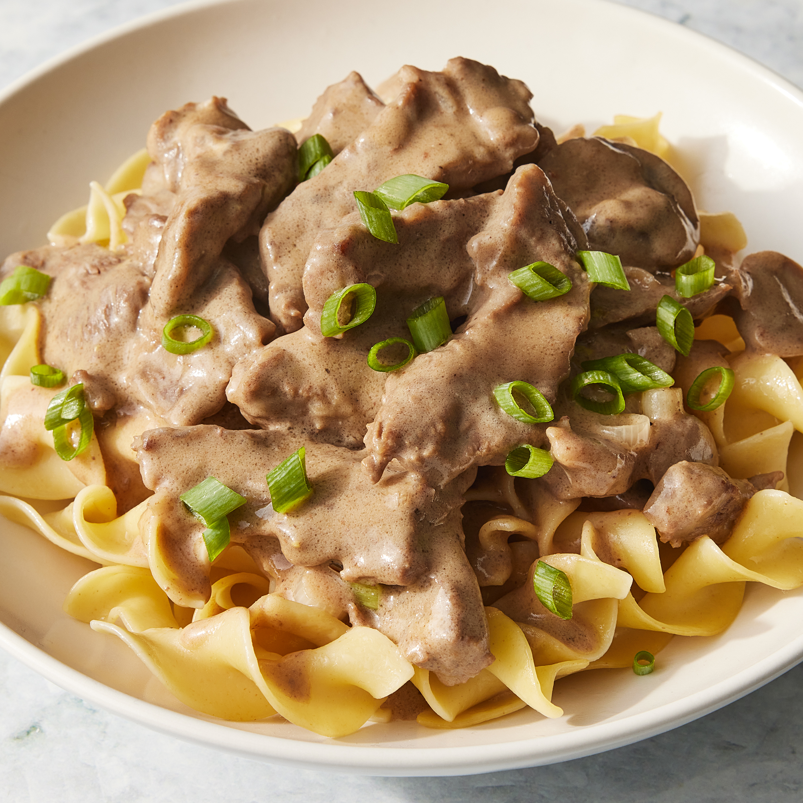

Beef Stroganoff

This is the best beef stroganoff recipe I know. It's well worth the effort. I have been making this for over 20 years!
This is some of the best beef stroganoff ever! I used sirloin instead of chuck roast and let that marinate in red wine, garlic, and Worcestershire for two hours before cooking. I cooked that then plated it. I used a combination of green onions and vidalia, fresh mushrooms instead of canned, 1 Tbsp. of Worcestershire, white wine and minced garlic. After I added the meat back in I reserved a bit of the broth to mix with 2 Tbsp. of corn starch. I added that to thicken then added the sour cream and a bit of cream cheese. This was fabulous served over egg noodles - YUM!
Ingredients
- 2 pounds beef chuck roast
- 1/2 teaspoon salt
- 1/2 teaspoon ground black pepper
- 4 ounces butter
- 4 green onions
- 4 tablespoons all-purpose flour
- 1 can condensed beef broth
- 1 teaspoon prepared mustard
- 1 can sliced mushrooms, drained
- 1/3 cup sour cream
- 1/3 cup white wine
- salt and ground black pepper to taste
Steps
- Remove any fat and gristle from chuck roast; cut into strips 1/2-inch thick by 2-inches long. Season with ½ teaspoon salt and ½ teaspoon pepper.
- Melt butter in a large skillet over medium heat. Add beef and brown quickly; push to one side of the skillet. Add onions; cook and stir for 3 to 5 minutes, then push to the side with beef.
- Stir flour into juices on the empty side of the pan. Pour in beef broth and bring to a boil, stirring constantly. Lower the heat and stir in mustard. Cover and simmer for 1 hour or until the beef is tender.
- Five minutes before serving, stir in mushrooms, sour cream, and white wine. Cook until heated through; season to taste with salt and pepper.